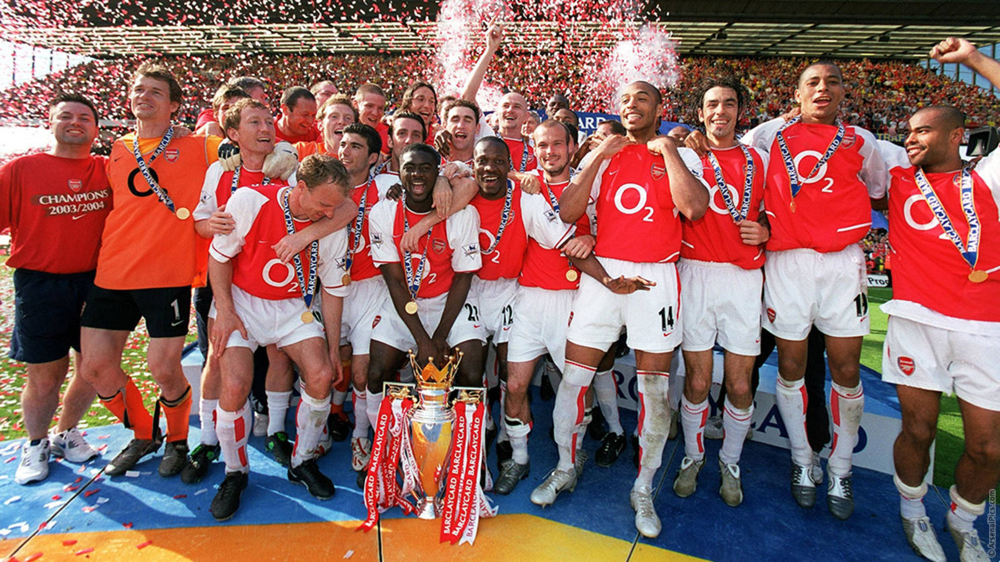

Thirty-eight matches. Twenty-six wins. Twelve draws. Zero defeats. Even writing the numbers down feels strange. In the 2003–04 season, Arsenal went through an entire Premier League campaign without losing a single game, something no other team has done in the Premier League era. They became known simply as the Invincibles.
The team almost names itself. Jens Lehmann in goal. Lauren, Sol Campbell, Kolo Touré and Ashley Cole at the back. Patrick Vieira and Gilberto Silva in the middle, with Robert Pires and Freddie Ljungberg on the wings. Dennis Bergkamp floating behind Thierry Henry. And Arsène Wenger on the touchline, calm, almost professorial, watching a side that played football at a speed and with an elegance the league hadn’t really seen before.
Henry was the heart of it. Thirty league goals, the Golden Boot, and a way of running with the ball that made defenders look like they were moving through water. Bergkamp gave the team its imagination, Vieira gave it its spine, and Pires gave it its smile. It was a team of real personalities, and you could recognise every one of them from the way they moved.
People forget how close it came to ending. In September, at Old Trafford, in the middle of a furious, bad-tempered game, Ruud van Nistelrooy stepped up to take a penalty in stoppage time—and hit the crossbar. The match finished 0–0, and the unbeaten run survived. In April, days after being knocked out of the FA Cup by Manchester United and out of the Champions League by Chelsea, Arsenal were losing 2–1 at half-time at home to Liverpool. The season could have collapsed right there. Instead, Henry scored a hat-trick and Arsenal won 4–2.
Even the final day had drama. Against Leicester, Arsenal went behind. A draw would have been enough for the record, but this team didn’t do enough. Henry scored a penalty, Vieira scored the winner, and the season ended the way it had been played: without a defeat. The league later gave them a special gold trophy to mark it. The run eventually stretched to 49 league games before it ended—where else—at Old Trafford in October 2004.
As an Arsenal fan, I think about that team a lot. Not only because of the record, but because of what it represents: a whole season without the worst feeling in football. Every supporter knows that feeling, the walk home after a loss. For thirty-eight games, Arsenal fans never had to feel it.
Records get broken. Trophies get won again. But going a whole season unbeaten in one of the toughest leagues in the world is something that may never be repeated. That’s why, twenty years later, people still just say “the Invincibles,” and everyone knows exactly who they mean.